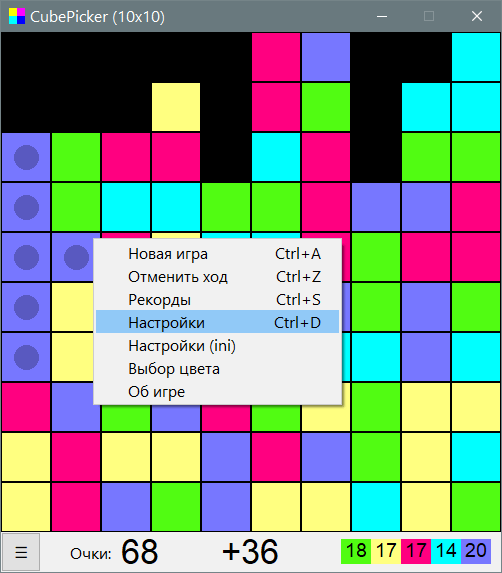

CubePicker
Назначение
Игра - уничтожить кубики.

Взаимосвязанные
CubePicker
Описание
Уничтожать кубики зарабатывая очки. Чем больше кубиков будет уничтожено тем больше очков в квадратичном увеличении, поэтому надо строить фигуру из кубиков чтобы сорвать куш, который в разы превысит обычное удаление кубиков.
В нижней части окна статистика:
- Очки.
- Число очков, которые можно взять с текущей фигуры кубиков, над которыми курсор.
- Текущее число цветных кубиков.
Выбор цвета позволяет плавно изменить цвет группы кубиков, над которым был курсор в момент вызова меню.
При сохранении рекордов сохраняются индивидуальные таблицы с одинаковыми настройками размера ширины и высоты (в кубиках) и числа цветов, соответственно рекорды определяются одинаковыми условиями сложности игры.
ini-файл:
[set]
square = 40 - размер квадрата в пикселях (20-100)
columns = 20 - число колонок (10-50)
rows = 15 - число строк (10-50)
indent = 1 - отступы между квадратами (0-3), 0 - слитно, 3 - для больших экранов
delay = 300 - задержка между кликом и реакцией пропадания (0-400)
colormax = 5 - число цветов (3-5)
recordsmax = 15 - максимальное число записей в таблице рекордов (3-30)
highlight = 0 - задаёт подсветку квадратов которые будут уничтожены с возможностью отключить совсем или задать яркость (0-9)
user = name - введите имя, чтобы игра не спрашивала имя при сохранении рекордов. Многим это покажется надоедливым.
[color] ; цвета квадратов
1 = 51FC12
2 = FFDB77
3 = FF399D
4 = 0FF
5 = 77F